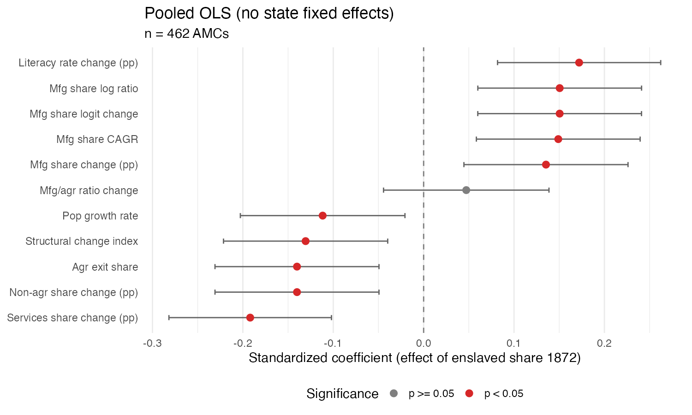
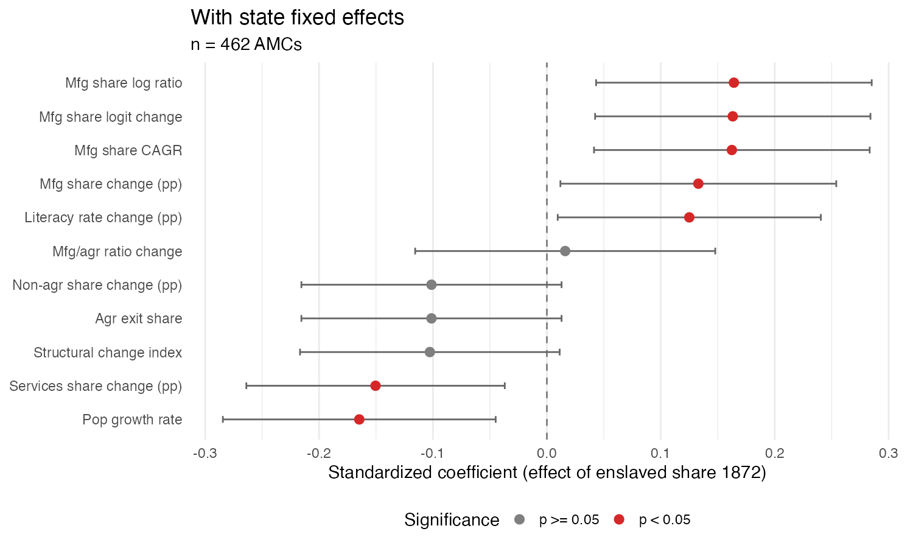
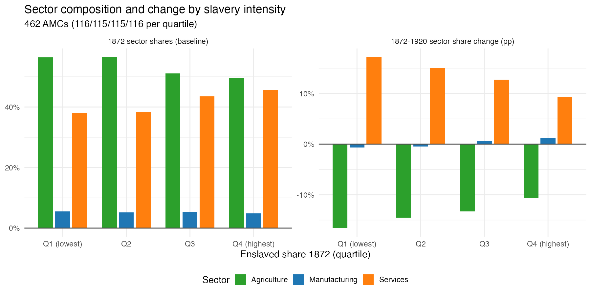

Loading data...
Top geographies for selected metric
Within-state standardized regressions at AMC level. Error bars = 95% CI. States with < 5 AMCs excluded.


Pooled regressions across all AMCs. Variables standardized globally. Error bars = 95% CI.
